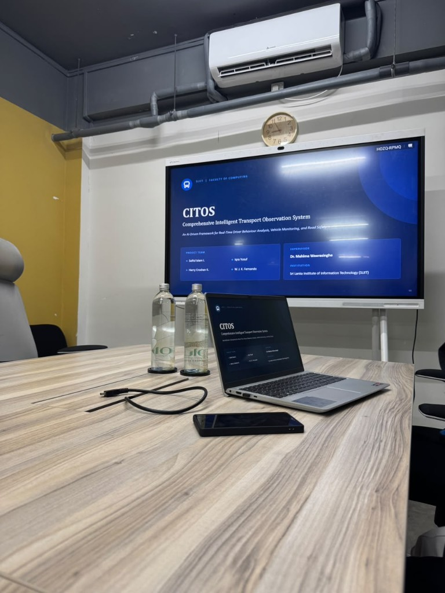
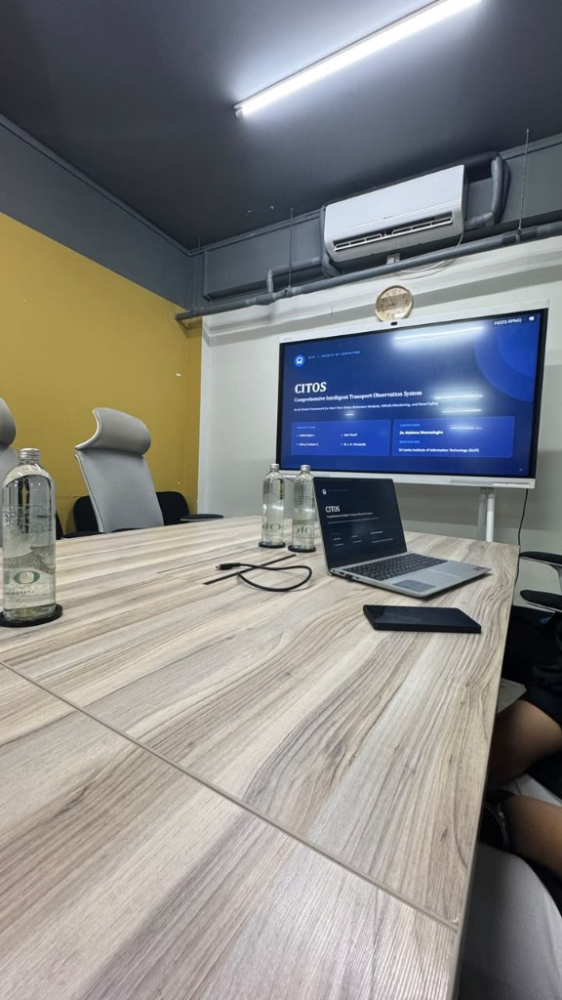
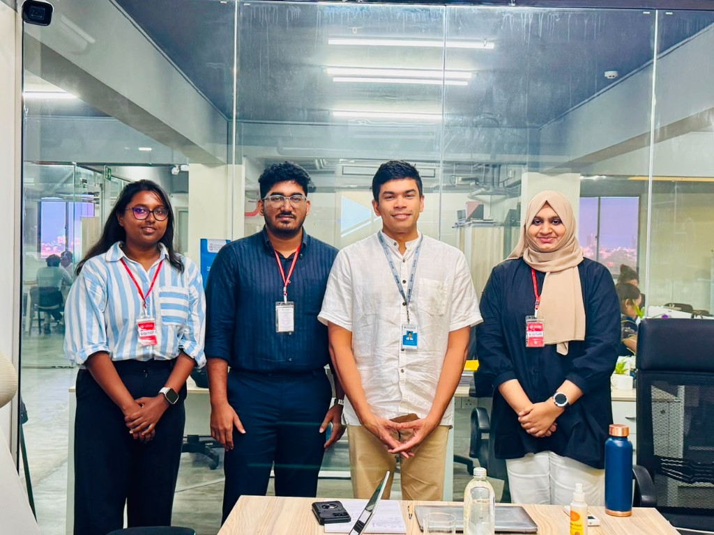

CITOS
Comprehensive Intelligent Transport Observation System
An AI-driven framework for real-time driver behaviour analysis, vehicle monitoring, and road safety.
Driver monitoring is often split across one camera, one vehicle signal, or one legal question. CITOS is the group framework that places those studies side by side for safer driving. The detailed evidence stays in the research components.
Four complementary studies
Domain introduces the project. Research holds the component pages, including the detailed driver fatigue study.
Intelligent Driver Assessment
Dashcam violations, a GPS stop test, a fair driver score, and a GraphRAG assistant that answers traffic-law questions only from evidence it can trace.
Open the assessment researchMultimodal Driver Fatigue Detection
A vision study of acted drowsiness, with physiology and CAN held as separate test replays. The live prototype uses the camera only.
Open the fatigue researchRoute-Aware Behaviour Analytics
An MPU6050 and ESP32 stream classifies smooth against aggressive driving, then braking against acceleration, and estimates passenger comfort. Pedal vision, route-context scoring, and predictive maintenance are specified and not yet implemented.
Open behaviour analyticsContext-Aware Driver Distraction Detection
An intelligent driver monitoring system combining EfficientNet-B0 activity classification, MediaPipe gaze monitoring, YOLOv8 traffic density, and OSM route hazards for situational risk estimation.
Open distraction researchFrom separate signals to a shared picture
Each layer is described in full on the Domain page. Component results are not repeated here.
-
01
Sensing
Cameras, GPS, an IMU, and, in separate studies, physiology and CAN / OBD-II.
-
02
Inference
Assessment, fatigue, behaviour, and distraction each keep their own models.
-
03
Integration
Outputs can be shown together. A joint synchronized trial is not claimed.
-
04
Presentation
Alerts, scores, and explanations a reader can check on the research pages.
Selected highlights from the research pages
- Research components
- 6
- Languages supported
- 4
- Hallucination-control layers
- 5
- Distraction classes
- 10
Project Demonstration at NCG
The CITOS research team presented the developed system and research work during a project demonstration at NCG.
The slides show the presentation screen, the demonstration setup, and the project team.



Read the project, then the components
Domain is the group account of CITOS. Research is where each component keeps its method, figures, and limits.